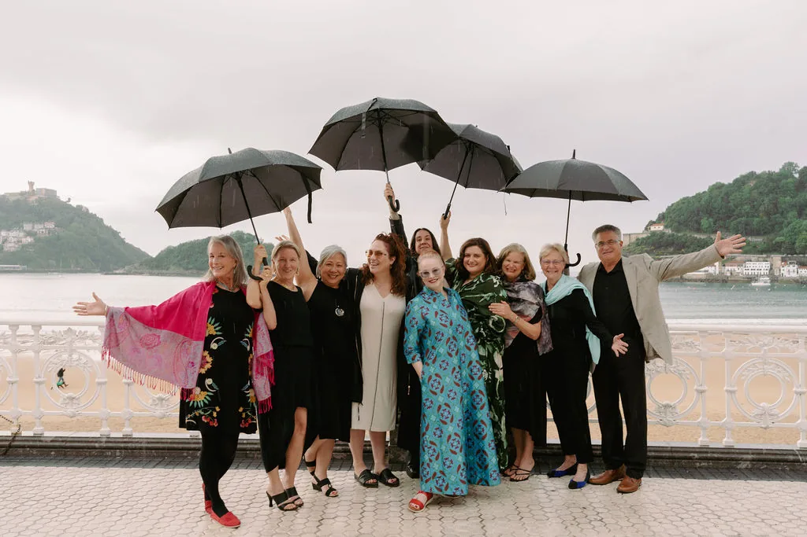
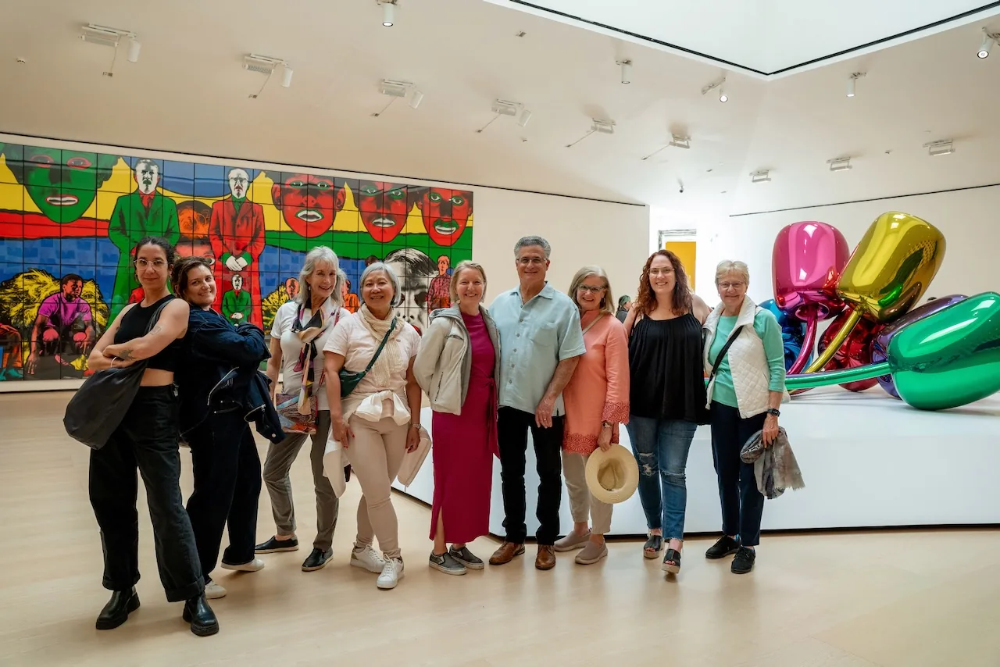
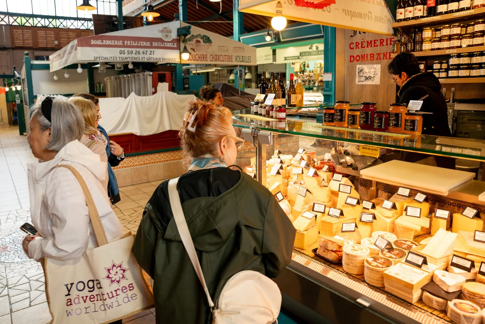
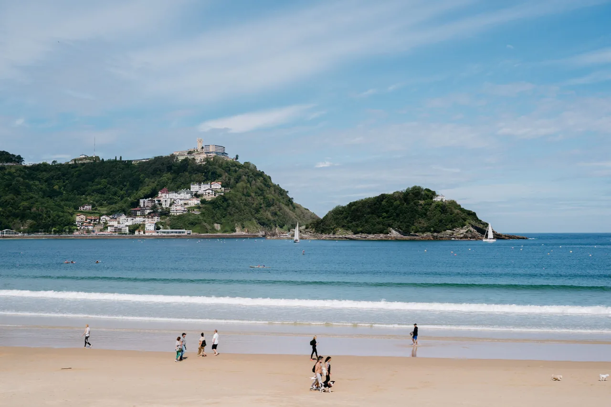
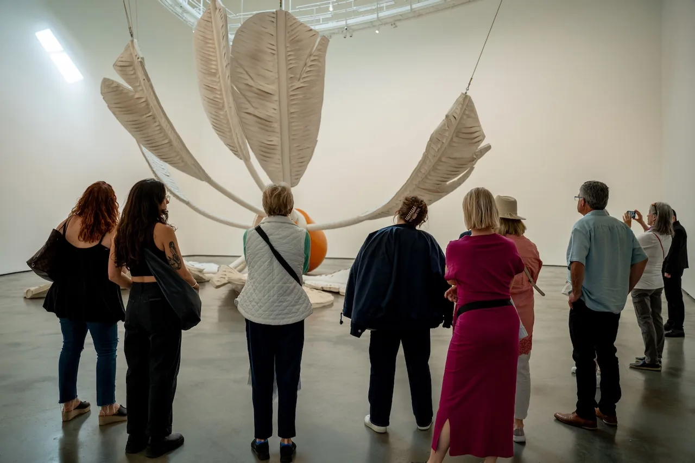
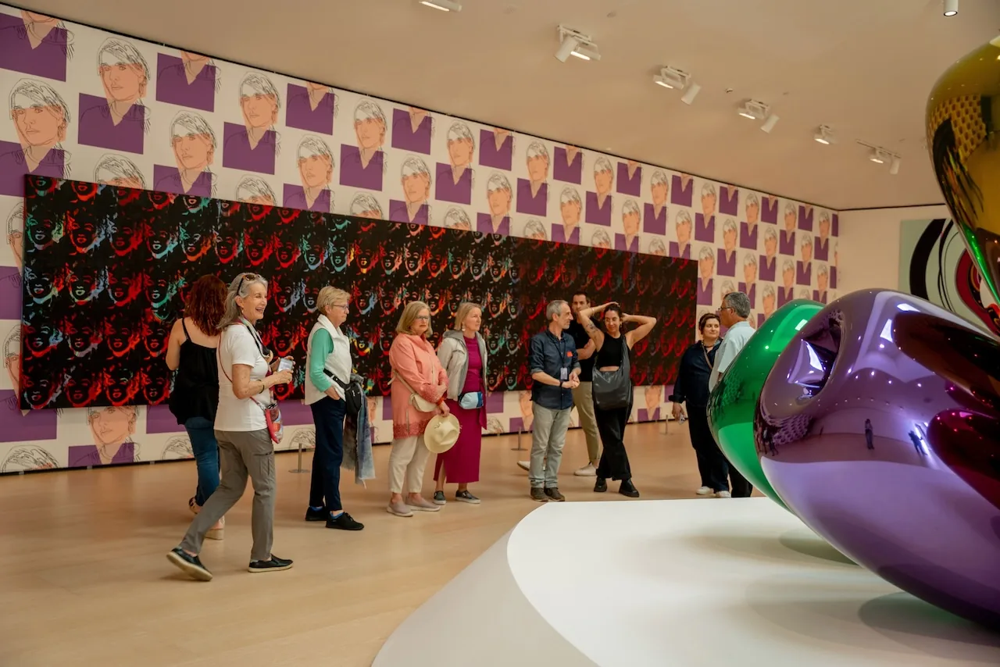
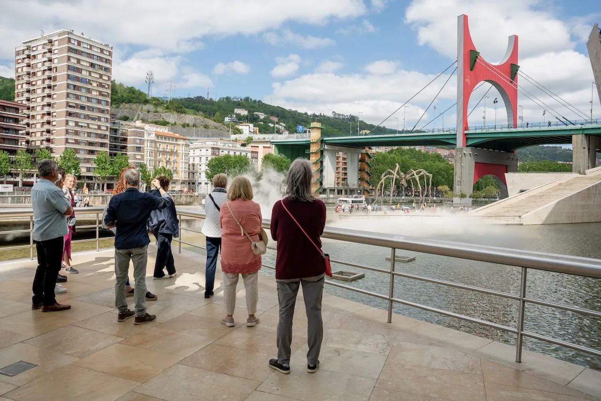
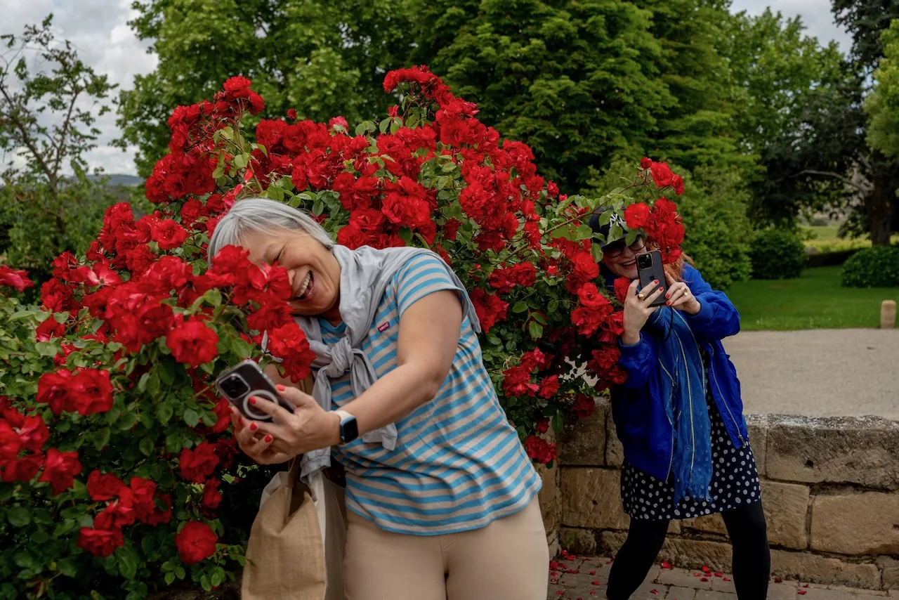
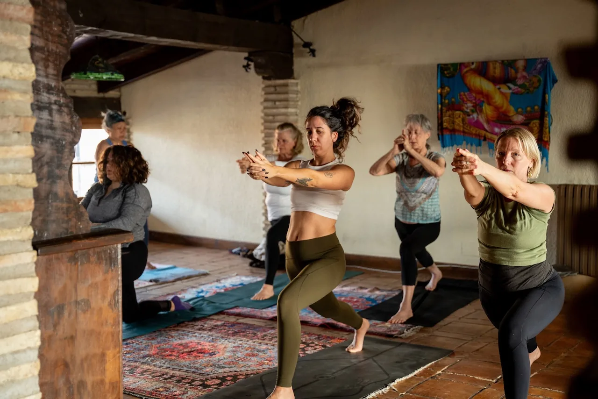
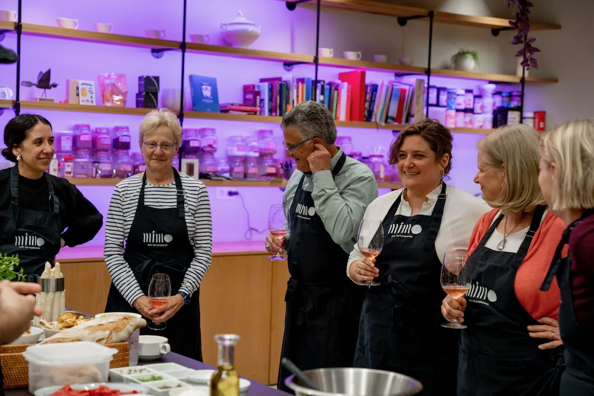

About this retreat
Imagine waking up to the scenic vistas of Spain’s Basque Country, where rugged cliffs meet the azure Atlantic. Your mornings begin with soulful yoga sessions led by our fabulous instructors, prepping your body and mind for the adventures ahead. As the sun climbs, you’re off to explore—from San Sebastián’s picturesque beaches to the rolling vineyards of Rioja and an optional experience in Bilbao’s iconic Guggenheim Museum. But wait, there’s more!
You’ll get to experience Spanish wine country like never before—amidst sprawling vineyards and historic wineries. Savor exclusive winery tours and, of course, tastings of some of the finest wines Spain has to offer. It’s a holistic journey for your senses, connecting your mind, body, and palate. And don’t even get us started on the food. Expect culinary delights like pintxos crawls and intimate chef-led cooking classes and super special insider connections. We even visit French Basque Country to explore the food markets, fabulous shopping and charming seaside towns.
There’s something so fabulous about the warmth of a community brought together by a shared love for travel, food, and yoga. This is more than a retreat; it’s an adventure of a lifetime. Ready for some good vibes and unforgettable experiences? Let’s make it happen!
Includes
- 3 nights in a beach front boutique hotel in San Sebastian/Donostia
- 3 nights in a 17th Century posada tucked into the charming village of Laguardia
- Yoga classes as per the itinerary
- Delicious Spanish style breakfasts daily & three lunches
- All dinners including pinxtos, cooking experience, Chuleton and traditional Basque cuisine dining
- Opening dinner at 2 Michelin star restaurant Amelia
- Two exclusive wine tastings in wine country
- Basque Cooking Class
- Walking day tour exploring the Old Town, nature and the beauty of San Sebastian/Donostia
- Walking city pintxos tour in San Sebastian
- Transportation from San Sebastian to Rioja and from Laguardia to Bilbao Airport
- All hotel taxes & fees
Itinerary
-
Day 1
- Arrival to our oceanfront San Sebastian hotel, check-in & settle
- Opening circle and yoga practice
- Opening dinner at the hotel's two Michelin star restaurant with wine pairing
-
Day 2
- Coffee in room
- Yoga in local studio
- Breakfast at hotel
- Walking Day Tour through the Old Town + Pintxo tour
- Free evening to explore San Sebastian; rest; enjoy La Perla spa
- Dinner on your own
-
Day 3
- Coffee in room
- Yoga practice at a local studio
- Gourmet breakfast at hotel
- Free day to relax, explore, beach or excursion
- Optional day trip to visit the French Basque Country; market stop, shopping, lunch and guide included
- Basque Country Cooking Class
-
Day 4
- Coffee in room
- Yoga practice at a local studio
- Breakfast
- Check out of hotel
- Leave for Laguardia
- Posada check in and bag drop
- Lunch together in Laguardia
- Exclusive wine tasting at Posada winery
- Dinner together at the posada
-
Day 5
- Coffee & fruit
- Yoga practice
- Breakfast
- Free time to explore the village; walk through the surrounding vineyards
- Exclusive wine tasting, vineyard tour & lunch in wine country
- Specialty workshop
- Dinner together at the posada
-
Day 6
- Coffee & fruit
- Yoga practice
- Breakfast together at the posada
- Free time; optional tastings at nearby bodegas (on your own); Lunch on your own
- Walking tour in Laguardia and the Church of Santa María de los Reyes
- Closing Circle
- Dinner together at the posada
-
Day 7
- Breakfast
- Check out of posada in Laguardia
- Group shuttle to Bilbao Airport (plan to arrive by 12:30pm)
-
Day 8
- Breakfast
- Free time to explore the area
- Check out
- Departures on your own
Please note: the retreat is officially 6 nights long (3 nights in San Sebastian and 3 nights in wine country).
There is an optional additional night added to the end of each retreat (making it 7 nights if you choose to add the Guggenheim experience in Bilbao).
Dates listed on the website INCLUDE the extra night.
For example: October 11-17, 2025 (official retreat) + optional night of October 17 in Bilbao = retreat plus the extra night ends on October 18 after breakfast
Accommodations
What guests say
Join the waitlist
We are planning the next retreat in Spain, Basque Country. Leave your name and we will write to you first, before the dates go public.
You are on the list
We will write to you as soon as the dates are set.
The itinerary, inclusions and stay on this page are from our last retreat here in October 2025; the next one may differ, and its dates, teacher and prices come out together.
Optional Extras
Where you’ll be
Photographs from past retreats in Basque Country, Spain.










Additional info
Easygoing. Yoga is daily, mostly at a local studio in San Sebastián, and the rest is walking: a day tour of the Old Town, a pintxos crawl, and Laguardia and its vineyards. There is also a walk in nature, so bring something sturdy on your feet.
Our last retreat here ran in October, when days are usually in the low 70s °F (around 22°C) and nights in the high 50s (around 14°C). San Sebastián can be rainy at any time, so bring a rain jacket and a small umbrella.
Not on this retreat. Basque cooking is built around meat and seafood, so vegetarian and vegan diets can't be accommodated. Pescatarian, gluten free and specific allergies are easier, but serious allergies are hard to manage in small kitchens. This one is best if you eat everything.
Layers for sunny days and cool evenings, a rain jacket, and shoes that handle cobblestones. A swimsuit for the beach. Mats are provided at the studio in San Sebastián, but bring your own mat and props for wine country.
Yes. Deluxe rooms can have two twin beds if you'd like to share with another guest, and every room has an ensuite bathroom. All dinners are included and shared, so you're never far from the group.
Bilbao (BIO) is usually the cheapest airport, about an hour from San Sebastián; you can also fly into San Sebastián (EAS). The ride to the first hotel isn't included: a taxi is about 155 to 200 euro, or take an ALSA or PESA bus. On the last day a group shuttle reaches Bilbao airport around 12:30pm.
Deposits of $1,000 USD are due to secure your space in the retreat. Please check availability with us for accommodations before making your deposit.
The balance of your retreat (minus your $1,000 USD initial deposit) is due 90 days prior to arrival. All details with instructions for settling up will be emailed to you three months prior to the retreat.
We accept credit card, wire transfer, Zelle and Bitcoin. Please ask us for the details of the one you would like to use.
All payments are 100% non refundable and non-transferable. We recommend that you buy Trip cancellation insurance immediately upon making your initial deposit to cover any travel hiccups or complications that may arise between now and the time of your retreat. No exceptions are possible so please cover your trip by connecting with an insurance company that offers the right policy for you.
There are no refunds as per our cancellation policies. We highly recommend that all of our guests secure a quality travel insurance that will cover them for any event which may cause a change of travel plans, including personal health issues or personal situations in general which may affect travel plans.
Not by us: transportation delays, cancellations or changes due to strikes, labor disputes, or lockouts from airlines, boats, ferries or any type of transportation are among the events we recommend covering with travel insurance.
The full terms and conditions are published at yogaadventuresworldwide.com/termsandconditions. By submitting payments toward your retreat you accept them.
Every trip has an environmental impact. If you would like to offset your carbon footprint, you can contribute to climate projects through trusted organizations.
[missing data: the offsetting organization YAWW recommends, with its link]